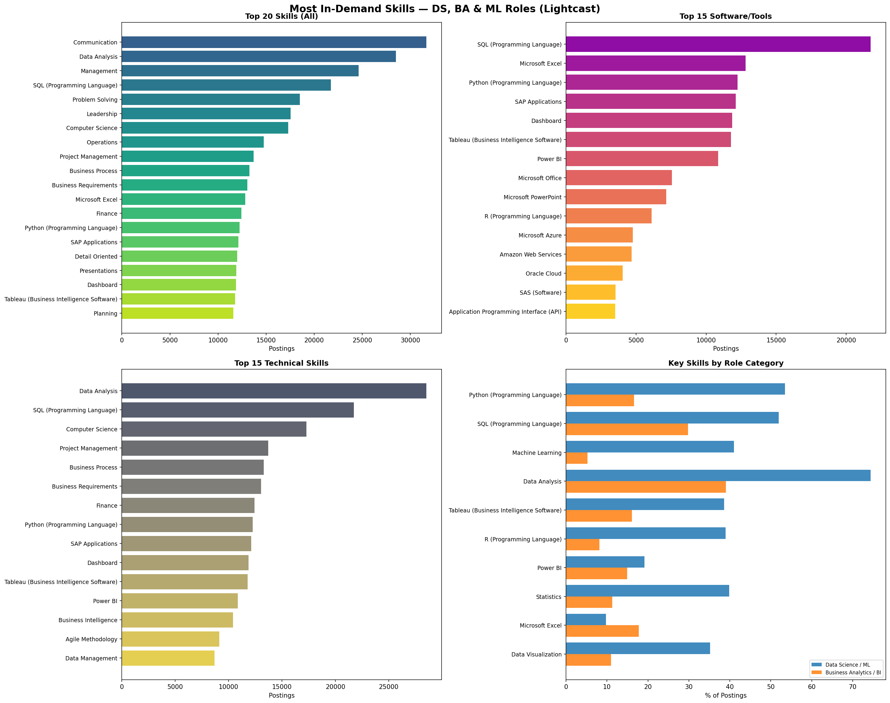

import pandas as pd, json, matplotlib
matplotlib.use('Agg')
import matplotlib.pyplot as plt, numpy as np
df = pd.read_csv("./data/lightcast_job_postings.csv", low_memory=False)
print(f"Total postings: {len(df):,}")Total postings: 72,498Omar Mohd Haris
April 16, 2026
The data science and analytics job market continues to expand rapidly, with the U.S. Bureau of Labor Statistics projecting 36% employment growth for data scientists from 2023 to 2033. As the field matures, understanding which specific skills employers demand is critical for job seekers, educators, and program designers alike.
Previous research has examined skill requirements across analytics roles. Radovilsky et al. (2018) conducted a comparative analysis of 1,050 job postings and found that data science roles emphasize computer systems, algorithms, and programming, while business data analytics roles place greater weight on statistical analysis and decision-making support. Similarly, Verma et al. (2019) performed a content analysis of job advertisements and identified SQL, Excel, and visualization tools as core requirements across analytics positions. More recently, Levendis (2025) identified the most sought-after skills for business analytics roles, highlighting both technical proficiency and communication as key employer expectations.
This analysis extends that body of work by examining 72,498 job postings from the Lightcast dataset to identify the most in-demand skills across Data Science, Business Analytics, Machine Learning, and related roles.
We begin by loading the Lightcast job postings dataset, which contains 131 columns covering job titles, skills, certifications, location, salary, and occupation classifications.
To focus on data science, business analytics, and ML roles, we categorize each posting using keywords matched against the TITLE_NAME (Lightcast’s standardized job title) and ONET_NAME (Bureau of Labor Statistics occupation classification) columns. This dual-column approach ensures we capture roles that may have non-standard titles but are classified under relevant O*NET codes.
ds_ml_titles = ['data scien', 'machine learn', 'deep learn', 'ai engineer',
'nlp engineer', 'computer vision']
ba_titles = ['business intel', 'business analy', 'bi analyst', 'bi developer']
da_titles = ['data analy']
de_titles = ['data engineer']
def categorize(row):
t = str(row['TITLE_NAME']).lower()
o = str(row['ONET_NAME']).lower()
c = t + ' ' + o
if any(k in c for k in ds_ml_titles): return 'Data Science / ML'
if any(k in c for k in ba_titles): return 'Business Analytics / BI'
if any(k in c for k in da_titles): return 'Data Analytics'
if any(k in c for k in de_titles): return 'Data Engineering'
return None
df['role_category'] = df.apply(categorize, axis=1)
df_filtered = df[df['role_category'].notna()].copy()
print(f"Filtered to {len(df_filtered):,} relevant postings ({len(df_filtered)/len(df)*100:.1f}%)\n")
print("Role distribution:")
print(df_filtered['role_category'].value_counts().to_string())Filtered to 72,454 relevant postings (99.9%)
Role distribution:
role_category
Business Analytics / BI 71869
Data Science / ML 585The Lightcast dataset stores skills as JSON arrays within string columns (e.g., SKILLS_NAME, SPECIALIZED_SKILLS_NAME, SOFTWARE_SKILLS_NAME). Each posting can list multiple skills, so we parse these JSON arrays into Python lists for analysis. This approach is consistent with how Radovilsky et al. (2018) extracted and categorized skill keywords from job posting text.
We explode the skill lists so that each skill–posting pair becomes its own row, then count the frequency of each skill across all filtered postings. This gives us the overall demand landscape.
all_skills = df_filtered['SKILLS_NAME_list'].explode().dropna()
all_skills = all_skills[all_skills != '']
all_counts = all_skills.value_counts()
print(f"\n{'='*65}")
print(f"TOP 30 MOST IN-DEMAND SKILLS (DS + BA + ML + DE)")
print(f"{'='*65}")
print(f"{'Rank':<5} {'Skill':<40} {'Count':>7} {'% Posts':>8}")
print(f"{'-'*65}")
for r,(s,c) in enumerate(all_counts.head(30).items(),1):
print(f"{r:<5} {s:<40} {c:>7,} {c/len(df_filtered)*100:>7.1f}%")
=================================================================
TOP 30 MOST IN-DEMAND SKILLS (DS + BA + ML + DE)
=================================================================
Rank Skill Count % Posts
-----------------------------------------------------------------
1 Communication 31,661 43.7%
2 Data Analysis 28,515 39.4%
3 Management 24,631 34.0%
4 SQL (Programming Language) 21,733 30.0%
5 Problem Solving 18,522 25.6%
6 Leadership 17,561 24.2%
7 Computer Science 17,287 23.9%
8 Operations 14,767 20.4%
9 Project Management 13,711 18.9%
10 Business Process 13,278 18.3%
11 Business Requirements 13,035 18.0%
12 Microsoft Excel 12,826 17.7%
13 Finance 12,438 17.2%
14 Python (Programming Language) 12,253 16.9%
15 SAP Applications 12,123 16.7%
16 Detail Oriented 11,987 16.5%
17 Presentations 11,890 16.4%
18 Dashboard 11,856 16.4%
19 Tableau (Business Intelligence Software) 11,781 16.3%
20 Planning 11,578 16.0%
21 Writing 11,274 15.6%
22 Power BI 10,850 15.0%
23 Business Intelligence 10,423 14.4%
24 Research 10,038 13.9%
25 Consulting 9,533 13.2%
26 Agile Methodology 9,131 12.6%
27 Innovation 9,000 12.4%
28 Troubleshooting (Problem Solving) 8,996 12.4%
29 Information Technology 8,852 12.2%
30 Data Management 8,691 12.0%Lightcast separately tags software and tool skills in the SOFTWARE_SKILLS_NAME column, allowing us to isolate the specific technologies employers require. The dominance of SQL in this ranking aligns with findings from Verma et al. (2019), who identified SQL as the most frequently listed technical requirement in analytics job advertisements.
sw = df_filtered['SOFTWARE_SKILLS_NAME_list'].explode().dropna()
sw = sw[sw != '']
sw_counts = sw.value_counts()
print(f"\n{'='*65}")
print(f"TOP 20 SOFTWARE / TOOLS")
print(f"{'='*65}")
for r,(s,c) in enumerate(sw_counts.head(20).items(),1):
print(f"{r:<5} {s:<40} {c:>7,} {c/len(df_filtered)*100:>7.1f}%")
=================================================================
TOP 20 SOFTWARE / TOOLS
=================================================================
1 SQL (Programming Language) 21,733 30.0%
2 Microsoft Excel 12,826 17.7%
3 Python (Programming Language) 12,253 16.9%
4 SAP Applications 12,123 16.7%
5 Dashboard 11,856 16.4%
6 Tableau (Business Intelligence Software) 11,781 16.3%
7 Power BI 10,850 15.0%
8 Microsoft Office 7,564 10.4%
9 Microsoft PowerPoint 7,161 9.9%
10 R (Programming Language) 6,104 8.4%
11 Microsoft Azure 4,759 6.6%
12 Amazon Web Services 4,692 6.5%
13 Oracle Cloud 4,053 5.6%
14 SAS (Software) 3,539 4.9%
15 Application Programming Interface (API) 3,509 4.8%
16 Microsoft Access 3,247 4.5%
17 Relational Databases 3,155 4.4%
18 Salesforce 2,838 3.9%
19 Java (Programming Language) 2,632 3.6%
20 Microsoft Outlook 2,437 3.4%Here we compare the top 10 skills within each role category. This comparison reveals important differences: Data Science/ML roles prioritize Python, Machine Learning, and Statistics, while Business Analytics/BI roles emphasize Communication, Management, and Business Process knowledge. This distinction echoes the findings of Radovilsky et al. (2018), who noted that “data science emphasizes computer systems, algorithms, and computer programming skills, whereas business data analytics has a substantial focus on statistical and quantitative analysis of data, and decision-making support.” Levendis (2025) similarly found that business analytics employers seek a blend of technical and communication skills.
for cat in ['Data Science / ML','Business Analytics / BI','Data Analytics','Data Engineering']:
sub = df_filtered[df_filtered['role_category']==cat]
if len(sub) < 10: continue
cs = sub['SKILLS_NAME_list'].explode().dropna()
cs = cs[cs != '']
top = cs.value_counts().head(10)
print(f"\n {'='*55}")
print(f" {cat} ({len(sub):,} postings)")
print(f" {'='*55}")
for r,(s,c) in enumerate(top.items(),1):
print(f" {r:>3}. {s:<35} {c:>6,} ({c/len(sub)*100:.1f}%)")
=======================================================
Data Science / ML (585 postings)
=======================================================
1. Data Science 454 (77.6%)
2. Data Analysis 435 (74.4%)
3. Python (Programming Language) 313 (53.5%)
4. SQL (Programming Language) 304 (52.0%)
5. Communication 253 (43.2%)
6. Mathematics 244 (41.7%)
7. Machine Learning 240 (41.0%)
8. Statistics 233 (39.8%)
9. Computer Science 232 (39.7%)
10. R (Programming Language) 228 (39.0%)
=======================================================
Business Analytics / BI (71,869 postings)
=======================================================
1. Communication 31,408 (43.7%)
2. Data Analysis 28,080 (39.1%)
3. Management 24,463 (34.0%)
4. SQL (Programming Language) 21,429 (29.8%)
5. Problem Solving 18,346 (25.5%)
6. Leadership 17,340 (24.1%)
7. Computer Science 17,055 (23.7%)
8. Operations 14,706 (20.5%)
9. Project Management 13,599 (18.9%)
10. Business Process 13,231 (18.4%)The four-panel chart below summarizes our findings: (1) the top 20 overall skills, (2) the top 15 software/tools, (3) the top 15 specialized technical skills, and (4) a comparison of key skills across role categories.
fig, axes = plt.subplots(2, 2, figsize=(20, 16))
fig.suptitle('Most In-Demand Skills — DS, BA & ML Roles (Lightcast)',
fontsize=16, fontweight='bold', y=0.98)
# Chart 1: Top 20 overall
ax = axes[0,0]
t20 = all_counts.head(20)
ax.barh(range(len(t20)), t20.values, color=plt.cm.viridis(np.linspace(.3,.9,len(t20))))
ax.set_yticks(range(len(t20))); ax.set_yticklabels(t20.index, fontsize=9)
ax.invert_yaxis(); ax.set_xlabel('Postings'); ax.set_title('Top 20 Skills (All)', fontweight='bold')
# Chart 2: Top 15 software
ax = axes[0,1]
t15 = sw_counts.head(15)
ax.barh(range(len(t15)), t15.values, color=plt.cm.plasma(np.linspace(.3,.9,len(t15))))
ax.set_yticks(range(len(t15))); ax.set_yticklabels(t15.index, fontsize=9)
ax.invert_yaxis(); ax.set_xlabel('Postings'); ax.set_title('Top 15 Software/Tools', fontweight='bold')
# Chart 3: Specialized
spec = df_filtered['SPECIALIZED_SKILLS_NAME_list'].explode().dropna()
spec = spec[spec != '']
spec_counts = spec.value_counts().head(15)
ax = axes[1,0]
ax.barh(range(len(spec_counts)), spec_counts.values, color=plt.cm.cividis(np.linspace(.3,.9,len(spec_counts))))
ax.set_yticks(range(len(spec_counts))); ax.set_yticklabels(spec_counts.index, fontsize=9)
ax.invert_yaxis(); ax.set_xlabel('Postings'); ax.set_title('Top 15 Technical Skills', fontweight='bold')
# Chart 4: Comparison across roles
ax = axes[1,1]
key_skills = ['Python (Programming Language)','SQL (Programming Language)',
'Machine Learning','Data Analysis','Tableau (Business Intelligence Software)',
'R (Programming Language)','Power BI','Statistics','Microsoft Excel','Data Visualization']
cats = [c for c in ['Data Science / ML','Business Analytics / BI','Data Analytics','Data Engineering']
if len(df_filtered[df_filtered['role_category']==c]) > 0]
x = np.arange(len(key_skills))
w = 0.8 / len(cats)
for i, cat in enumerate(cats):
sub = df_filtered[df_filtered['role_category']==cat]
cc = sub['SKILLS_NAME_list'].explode().value_counts()
vals = [cc.get(s,0)/len(sub)*100 for s in key_skills]
ax.barh(x + i*w, vals, w, label=cat, alpha=0.85)
ax.set_yticks(x + w*(len(cats)-1)/2)
ax.set_yticklabels(key_skills, fontsize=9)
ax.invert_yaxis(); ax.set_xlabel('% of Postings')
ax.set_title('Key Skills by Role Category', fontweight='bold')
ax.legend(fontsize=8, loc='lower right')
plt.tight_layout()
plt.savefig('skills_analysis.png', dpi=150, bbox_inches='tight')
Our analysis of 72,498 Lightcast job postings reveals several key findings:
SQL is the universal requirement — appearing in 30% of all postings, it is the single most demanded technical skill across every role category.
Data Science/ML roles are distinctly more technical — Python (53.5%), Machine Learning (41%), R (39%), and Statistics (39.8%) are all significantly more prevalent in DS/ML postings compared to BA/BI roles, confirming the skill divergence identified by Radovilsky et al. (2018).
Communication and soft skills dominate BA/BI roles — Communication (43.7%), Management (34%), and Problem Solving (25.5%) rank highest for Business Analytics, consistent with the findings of Levendis (2025) that employers value both technical and interpersonal competencies.
The BI tool landscape is a three-way race — Tableau (16.3%), Power BI (15%), and Excel (17.7%) all appear in similar proportions, suggesting employers value familiarity with multiple visualization platforms rather than expertise in just one.
These findings have practical implications for analytics program curricula and for job seekers looking to align their skill development with market demand, as emphasized by Verma et al. (2019).